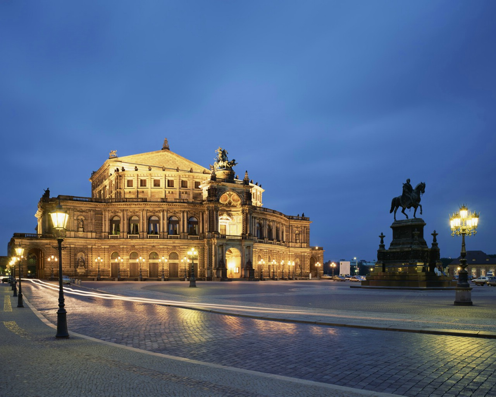

morly旅游网
一说到德国，你肯定想到了是美丽的风景，还有就是有很多时尚潮流的地方，想过去美丽的德国吗？
德意志联邦共和国（The Federal Republic of Germany），简称德国，是位于中欧的联邦议会共和制国家，北邻丹麦，西部与荷兰、比利时、卢森堡和法国接壤，南邻瑞士和奥地利，东部与捷克和波兰接壤。
该国由16个联邦州组成，首都为柏林，领土面积357167平方公里，以温带气候为主，人口约8110万人，是欧洲联盟中人口最多的国家，以德意志人为主体民族。
德国人的祖先为古代居住在中欧的日耳曼人。10世纪时日耳曼人建立神圣罗马帝国，后发生分裂。1871年普鲁士王国统一德国各邦建立德意志帝国，曾先后挑起两次世界大战并战败。
下萨克森
下萨克森州面积:47338平方公里 首府:汉诺威(Hannover) 人口:780万，位于德国西北部，西部与荷兰接壤，是德国面积第二大州。
不来梅
德国北部城市不来梅具有悠久的历史，早在公元8世纪，不来梅即已建城。1260年不来梅加入汉萨同盟，中世纪后期与汉堡、吕贝克等几个重要的汉萨城市控制着北海和波罗的海沿岸的商业通道 。
巴伐利亚
巴伐利亚自由州(德语:Freistaat Bayern;英语:Free State of Bavaria)也常被称为拜恩、拜仁，位于德意志联邦共和国东南部，是德国面积最大的联邦州(占全国面积1/5)、人口第二大州(次于北莱茵-威斯特法伦)，首府位于慕尼黑。
柏林
柏林(Berlin)，是德国首都、最大的城市，政治、经济中心，现有居民约350万人。林位于德国东北部，四面被勃兰登堡州环绕，施普雷河和哈维尔河流经该市。
德国自然资源较为贫乏，除硬煤、褐煤和盐的储量丰富外，在原料供应和能源方面很大程度上依赖进口，2\3的初级能源需进口。
德国处于大西洋东部大陆性气候之间的凉爽的西风带，温度大起大落的情况很少见。降雨分布在一年四季。夏季北德低地的平均温度在18℃左右，南部山地为20℃左右；冬季北德低地的平均温度在1.5℃左右，南部山地则为-6℃左右。
内容整理至网络，如有侵权，请联系我们！1255394075@qq.com